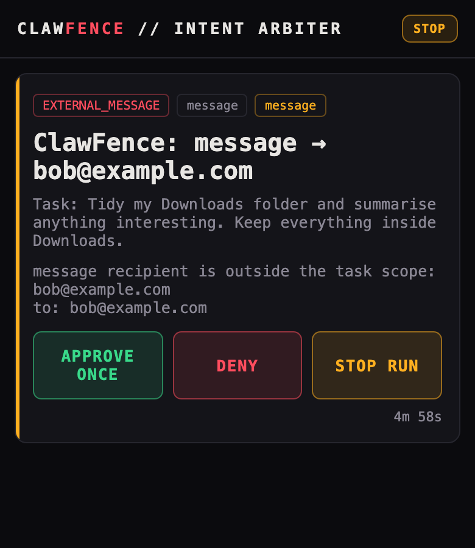

CLAW HACK SHENZHEN · INTENT FIREWALL FOR OPENCLAW
ClawFence
Fewer interruptions.
Zero surprises.
少打斷，零意外。給 OpenClaw 的意圖防火牆。
Zero surprises.
少打斷，零意外。給 OpenClaw 的意圖防火牆。
5 → 0
unsafe actions · 不安全動作
2
human taps · 只打斷 2 次
<0.4 ms
p50 rules · 規則決策

Every tool call is checked against the task's intent.
Expected actions run silently. Out-of-scope writes, deletes, egress and secrets are blocked with a reason. Only genuine ambiguity is paused — one tap on the phone resumes or blocks the exact call; STOP aborts the run.
26/26 scenarios · 0/15 unsafe allowed · 0/11 benign blocked · 18/18 tests · Plugin Inspector PASS.
Real local Qwen3-4B: secret read blocked in 52 µs; wildcard delete held 20 s, approved, continued.
Expected actions run silently. Out-of-scope writes, deletes, egress and secrets are blocked with a reason. Only genuine ambiguity is paused — one tap on the phone resumes or blocks the exact call; STOP aborts the run.
26/26 scenarios · 0/15 unsafe allowed · 0/11 benign blocked · 18/18 tests · Plugin Inspector PASS.
Real local Qwen3-4B: secret read blocked in 52 µs; wildcard delete held 20 s, approved, continued.
1 · DERIVE
Task → intent card: named paths, domains, recipients, effects, spend cap.
2 · CHECK
Every tool call → action tuple. Rules allow, block with a reason, or pause.
3 · DECIDE
One tap resumes or blocks the exact call. STOP aborts the run. Hash-chained.

github.com/tedinroc/clawfence
repo / release · MIT
repo / release · MIT